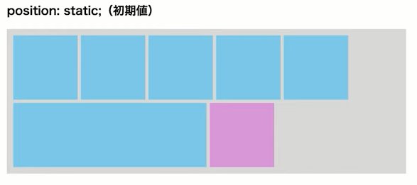
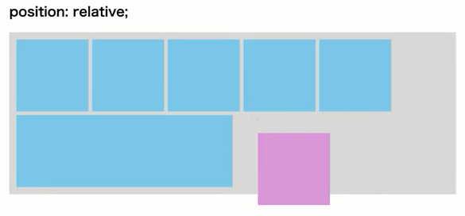
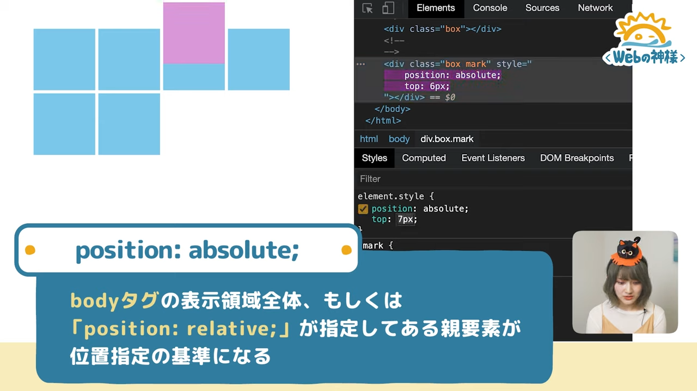

2020/10/12
細かい位置指定には欠かせない、positionプロパティ！ 初心者の方はもちろん、なんとなく使えているけど、たまに詰まることがある…そんな方にも是非観ていただきたい内容です。
＜目次＞
要素の配置を決めるためのCSSプロパティ
初期値の値。要素の流れが通常の流れにしたがって上から下、左から右と並ぶ。
相対位置。今ある場所から相対的に場所指定ができる。上下左右に配置をずらすことができる。
数値の指定には「top:上方向」「bottom:下方向」「left:左方向」「right:右方向」 に指定でき、数値はpx指定、親要素の幅や高さに対しての%指定もできる
絶対位置。通常時の配置は無視し、親要素を基準とした絶対的な配置ができる。
※「position: absolute;」だけを指定しても「top」,「left」などの位置指定プロパティを同時に指定しないと位置は動かないので注意。（初期位置のままになる）
特定の親要素を基準にしたいっていう場合は基準にしたい親要素に対して「position: relative;」を指定し、移動したい子要素に「position: absolute;」と位置指定プロパティを記述する。
絶対位置（ウインドウ基準）。Webサイトのメニューが常に画面の1番上に固定になっていたり、右下につまみみたいなメニューを固定表示させる時に使われる。
「absolute」は標準ではページ全体が基準だが、親要素に「position: relative;」が指定されていればその親要素が基準になる。
しかし「fixed」では必ずブラウザの表示領域が基準になる。スクロールをしてもブラウザ表示領域の指定した場所にある。
新しいプロパティのため割愛
positionプロパティ使用時のポイント
「relative」,「absolute」,「fixed」では要素が重なり合う。
通常は記述した順に手前に重なっていくが、「z-index」プロパティ。
要素に数字を指定し、大きい数字ほど手前に来る。数字は管理上、10ずつ100ずつずらしてしていする。逆に重なり順を後ろに指定したい場合は「-マイナス」を指定する。
余白を指定するときはpaddingプロパティやmarginプロパティを使うことが一般的。
見た目調整のために、positionプロパティの乱用は禁止。
余白で設定すべきところを見極めよう。
※positionプロパティは、アイコンの配置など細かい調整、パーツの配置などに向く。